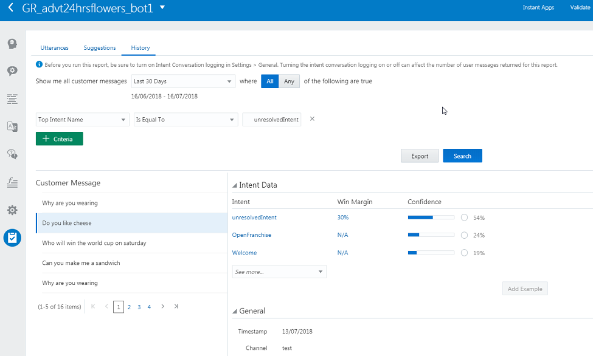
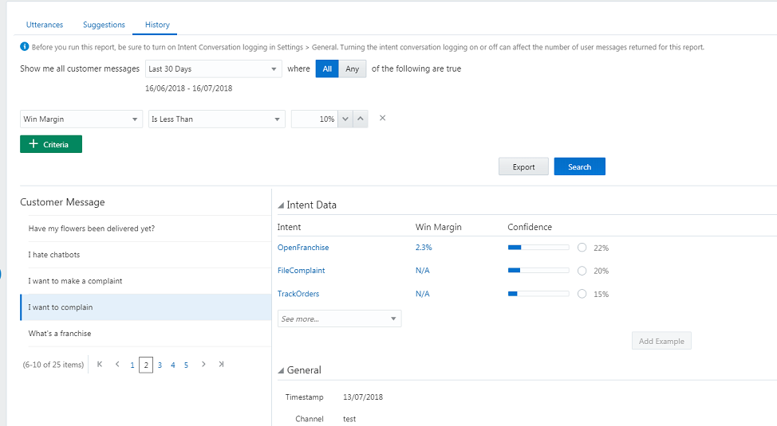

Oracle Intelligent Bots Advanced Training - Lab 1 (Intent Training)
Oracle Intelligent Bots Advanced Training - Lab 1 (Intent Training)The purpose of this lab is to become familiar with tips and techniques for training and testing your bot. Specifically, you will add utterances to the bot to train it to understand the 24 Hours Flowers use case. Then you'll work with a colleague to iteratively test your bot, adding more test data as you go along to fine-tune intent resolution.
We’ll focus on these intents:
FileComplaint– used when the customer has an issue that needs to be resolved, probably by a live agent.OpenFranchise– allows the customer to inquire about opening up a franchise to sell flowers online.TrackOrder– used when the customer wants to check the status of an order, cancel and order, or check the progress of an order.
 Clone the
Clone the advt24hrsflowers_bot1 Bot
We'll start with a bot that has been pre-populated with a few intents. Since you won't be the only one using your instance, you'll want to create your own copy of that bot to work with.
- Open the main menu by clicking
 and select Development > Bots.
and select Development > Bots. - Within the tile for the
advt24hrsflowers_bot1bot, click , select Clone, and name the clone
, select Clone, and name the clone advt24hrsflowers_bot1_<YourInitials>. For example:advt24hrsflowers_bot1_js. - Locate the tile for your clone of the bot (using the Search field might help) and click it to open the bot.
 Turn On Conversation Logging
Turn On Conversation Logging
We'll log the conversations with the bot in order to use those inputs to retrain and test the bot.
- In the left navigation of your bot, click .
- Select the General tab.
- Set the Enable Conversation Logging switches for Intent Conversation, Q&A Conversation, and Bot Conversation to ON.
 Create Utterances and Do a Round of Batch Testing
Create Utterances and Do a Round of Batch Testing
Next we'll prepare some data so we can run reproducible tests to help measure the success of the bot in understanding a conversation with a user. You can do batch testing by uploading a .csv file that contains test phrases and the intents to which they should resolve.
As a starting point, let's export the intents of the bot to get a .csv file with the correct format.
- Select
 and select More > Export intents.
and select More > Export intents.

- Save the files as
batchtest1.csv. - In Notepad or a similar text editor, write phrases that you think would be representative utterances for the
FileComplaint,OpenFranchise, andTrackOrdersintents.Write 10 utterances for each of those intents.
- For each intent, add 7 of the utterances you have just written to the bot by doing the following:
- Selecting the intent.
- Within the Examples area, pasting the utterances.
- Clicking
 , leaving Trainer Ht selected, and clicking Submit.
, leaving Trainer Ht selected, and clicking Submit.
- Add the remaining 3 utterances for each intent to the
batchtest1.csvfile by:- Copying the utterances into the first column.
- In the second column of each row, entering the name of the intent that the utterance is supposed to resolve to.
- Click
 .
. - Select Intent.
- Slide the Batch switch to ON.
- Click Load.
- Drag
batchtest1.csvinto the Load Batch dialog and click Test.
Take a look at the results and take note of anything that you find surprising.
 Iteratively Test Your Intents
Iteratively Test Your Intents
At this point, you have done one round of testing. To make sure that you have a robust training corpus of utterances, you'll want to do several more rounds and make any necessary adjustments to your utterances as you go along.
As part of this, you'll want to get other people involved in training your bot since phrases you think of to match an intent will probably vary from what other people come up with.
- With the help of your instructor, find a test partner.
- Have your partner enter phrases of their own in the tester for your bot (3 phrases for each of the 3 intents). You'll do the same for your partner's bot. To use the tester:
- Click .
- Select Bot.
- Type a phrase in the Message field and press Enter.
- Click
- Once your partner has finished entering phrases, open the bot's conversation logs by:
- Clicking to navigate back to the page that displays all of the Bots.
- Within the tile for your bot, clicking and selecting Export Conversation Log.
- In the Export Bot dialog, selecting Intent Conversation Log.
- In the log, see what intents that your partner's utterances were assigned and see if they are what you would have expected.
Using the phrases your testing partner added, you can do some further augmentation of your corpus, retrain your bot, and test the results.
- Go through the utterances and identify any that you think won't work, and replace them or make changes that you see fit.
- For each intent:
- Copy 2 of the utterances created by your test partner to your clipboard.
- Within the bot, select the intent.
- Within the Examples area, paste the utterances.
- Click .
- Leave Trainer Ht selected and click Submit.
- Create a copy of
batchtest1.csvand save it asbatchtest2.csv. - For each intent, add the remaining utterance created by your test partner to
batchtest2.csv. - Click .
- Select Intent.
- Slide the Batch switch to ON.
- Click Load.
- Drag
batchtest2.csvinto the Load Batch dialog and click Test. - Evaluate the results of the new test.
- Has the inclusion of new phrases helped in the intent resolution?
- Are you getting better results?
- Are you seeing obvious misclassifications?
We'll look at fine tuning these later in the lab.
- With your partner, or perhaps a new partner, repeat the exercises in this section with three more utterances for each intent.
 Train the Bot to Handle Spam
Train the Bot to Handle Spam
Now let's spend some time on the question of spam or other misuse of the bot. Up to 40% of a bot's workload may have nothing to do with the bot's intended use, and the bot needs to be able to gracefully handle this. Furthermore, training your bot to understand phrases that are outside of the use case has the benefit of helping it to disambiguate the intents it is supposed to handle.
- Test the bot with 10 random phrases such as “and she is buying a stairway to heaven”, “tell me a joke”, and “are you a lady bot” by doing the following:
- Clicking .
- Selecting Bot.
- Typing a phrase in the Message field and pressing Enter.
Repeat this step until you have entered 10 phrases.
- Clicking
- Open the conversation logs by:
- Clicking to navigate back to the page that displays all of the Bots.
- Within the tile for your bot, clicking and selecting Export Conversation Log.
- In the Export Bot dialog, selecting Intent Conversation Log.
- In the log, see if any of the phrases are resolved to any of your intents.
Spoiler alert: some of them probably are. You'll need to train the bot to recognize phrases that are outside of the scope of the bot and deal with them appropriately.
The unresolvedIntent Intent
To handle spam and other interactions for which the bot wasn't specifically designed, create a new intent called unresolvedIntent.
- With your bot open, click .
- Click + Intent.
- In the Name field type
unresolvedIntent. - In the Examples area for the intent, enter 7 of the random utterances that you just evaluated in the log.
- Click and click Submit.
- In the most recent version of your
batchtest.csvfile, add the three remaining phrases and specifyunresolvedIntentas the intent. - Click .
- Select Intent.
- Slide the Batch switch to ON.
- Click Load.
- Drag your batchtest file into the Load Batch dialog and click Test.
- Evaluate your test results.
- Try testing with the other training model by:
- Clicking again, selecting the other Intent Training model (probably Trainer Tm, and clicking Submit.
- Clicking .
- Selecting Intent.
- Sliding the Batch switch to ON.
- Clicking Load.
- Dragging your batchtest file into the Load Batch dialog and clicking Test.
- Clicking
- Compare the results with your previous results.
Now, for good measure, do additional testing with your test partner:
- Have your partner enter 10 random phrases into the tester for your bot.
- Open the conversation logs to see what intents the phrases resolved to.
- Open your bot, and select the
unresolvedIntentintent. - Repeat steps 4-14 from the previous procedure.
 Manually Improve the Bot
Manually Improve the Bot
In the presentation previous to this lab you learned of a number of techniques to improve your bot intents. Based on those lessons look at how you might improve some of the intent resolution. For example, you could:
- Emphasize specific key phrases.
- Repeat key utterances with some slight variations.
- Check where you think utterances could apply to different intents.
- try out some ideas and rerun your tests to see if that helps.
In parallel with applying above techniques, you'll probably want to run and evaluate quality reports.
To run a quality report:
- With your bot open, click .
- Click Run Report.
When you run a quality report it performs a random 80:20 split of utterances, using 80% subset to train with and 20% to test with. Since the split is random, the test results may differ every time you run the report.
Besides obvious problems such as misclassifications, here are some things to look out for in quality reports:
- Which of your phrases are resolving to
unresolvedIntent. This gives you a way of checking that what comes back as unresolved is in fact a phrase which should be handled by a generic catch-all intent.To find out, click the History tab and do a search for matches to
unresolvedIntent, like the one shown in this screenshot:
 - Which of your phrases are resolving to the correct intent, but with a narrow win margin? Such phrases may need work.
To investigate, do a search with the filter set to Win Margin, the operator set to Is Less Than, and the value set to a low percentage, such as 10% (as shown in this screenshot):

Notes
- Don’t worry about any misclassifactions involving
OrderFlowers, because we won’t add its training utterances until the next lab. - At the time of writing this lab, the History feature only works against input through the Bot Conversation tester, not the intent or batch tester. This means that you might have to manually enter some of your phrases in the Bot Conversation tester.
- Since quality reports do an 80:20 split between training and tester, some of the data you would normally use to train an intent will not be used as training material in the context of the report, which could result in misclassifications. For such misclassifications, you need to determine if they are simply a result of the way quality reports work or whether they are real and you need to add additional utterances.
- You may find some misclassification but decide that, if it resolves to a low percentage, it is acceptable.